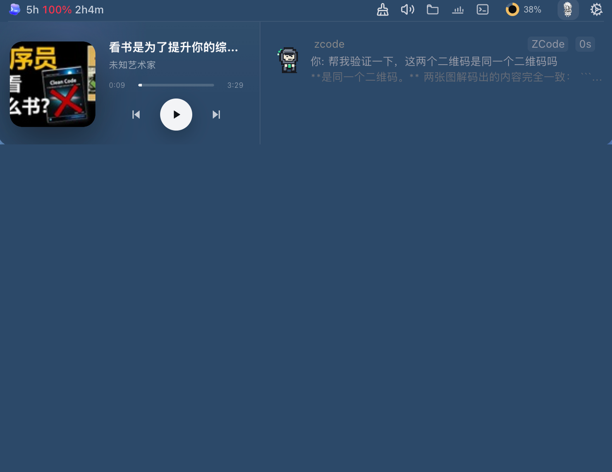

一眼看到所有任务
运行、等待确认、需要回答、完成与失败，在刘海处的岛屿里拥有不同的状态与颜色。
WORK ISLAND · FOR YOUR AGENTS
Claude Code、Codex、Cursor 等 Agent 在后台继续工作；只在需要确认、回答或跳回会话时，WorkIsland 才从刘海处轻轻把你叫回来。
APPLE SILICON · LOCAL FIRST · FREE & OPEN SOURCE
觉得 WorkIsland 好用？欢迎在 GitHub 上给我们点个 Star，这对我们真的非常重要。
看它怎么工作
WORKS WITH THE AGENTS YOU ALREADY RUN
WHY WORKISLAND
WorkIsland 不替代你已有的 Agent 或终端。它把本机正在发生的事件，变成清晰、可操作的注意力信号。
运行、等待确认、需要回答、完成与失败，在刘海处的岛屿里拥有不同的状态与颜色。
审批与提问不会被窗口盖住。在正确的时刻做决定，其余时间保持专注。
从 Island 一键跳回触发事件的终端或应用——Terminal、iTerm2、Ghostty、Warp 都支持。
内置刘海屏、无刘海屏或外接显示器，状态提示始终可靠、低干扰。
会话与项目内容默认留在你的 Mac，不需要云端账户就能开始工作。
声音、触感与桌宠补足状态感，但绝不抢走你正在做的事。
STAY IN FLOW
从“正在跑”到“需要你”，WorkIsland 只做注意力的最后一公里。每个状态都带着原因和下一步。
PRODUCT TOUR
后续录屏会从连接 Agent 开始，完整走完一次后台工作、审批和回源。现在先用真实产品截图，把每一段要展示的信息讲清楚。
不想加群也没关系。直接发邮件或提交公开 Issue；请尽量带上版本、复现步骤和必要的脱敏截图。日志默认保留在本机，由你决定是否导出和提交。
its.qianzhu@gmail.com加入社区参与下一版讨论，或直接添加作者千逐反馈 Agent 兼容问题。
若二维码失效，请发邮件至 its.qianzhu@gmail.com 提醒更新。当前安装包面向 Apple Silicon Mac（M 系列芯片）。下载入口会带你前往官方 GitHub Release。
不会。WorkIsland 采用本地优先设计：默认不上传会话内容、项目内容或使用数据，也不要求云端账户。
支持的 Agent 与事件类型会提供相应操作；无法精确回源或不支持的场景会明确呈现后备路径，不会伪装为成功。
可以。除 Hook 通道外还有 Transcript 文件监听通道，双通道互为补充，即使没配置 Hook 也能感知 Claude Code / Codex 的任务完成。
官网按钮始终指向最新稳定版 Release；页面加载后也会尝试识别对应的 Apple Silicon DMG 并显示版本号。
WorkIsland 以 Apache-2.0 许可证开源。你可以在 GitHub 阅读代码、提交 Issue 或参与贡献。
免费、开源、本地优先。
COMMUNITY
¥0 / 永久
最新稳定版 v0.2.x · 下载即用，无需配置云端账号。